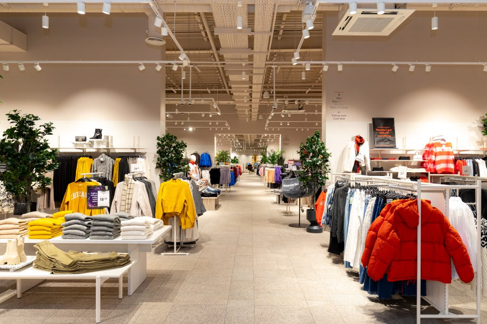

Fashion is a huge part of our lives, but it can also have a huge impact on the environment.
Fast Fashion
Fast fashion is the term used to describe the rapid production of clothing at low labor costs and low prices.
The fast fashion industry is one of the largest polutter in the world and it is responsible for a large amout of carbon Emmissions and water pollution.
fashion is also responsible for a large amount of waste, as clothing is often discarded after only a few wears.
is because fast fashion is designed to be cheap and disposable, rather than durable and long-lasting.
-
H&M is a major global fast fashion retailer that produces billions of garments each year by rapidly translating runway and cultural trends into affordable, mass-market clothing.
H&M bring their clothing collection to shelves in roughly 8 weeks -
Zara is widely considered a pioneer and major player in the fast fashion industry.
Zara is known for its ability to quickly respond to changing fashion trends and bring new designs to market in a matter of weeks, rather than months. The fast fahion brand is know for it clean fake luxury aesthetic that appeals to a wide range of consumers. -
Shein is a global ultra-fast-fashion e-commerce platform founded in China and headquartered in Singapore.
Shein is known for its low-cost, trendy clothing and accessories, and it has gained popularity among young consumers worldwide.
View Fast Fashion gallery

